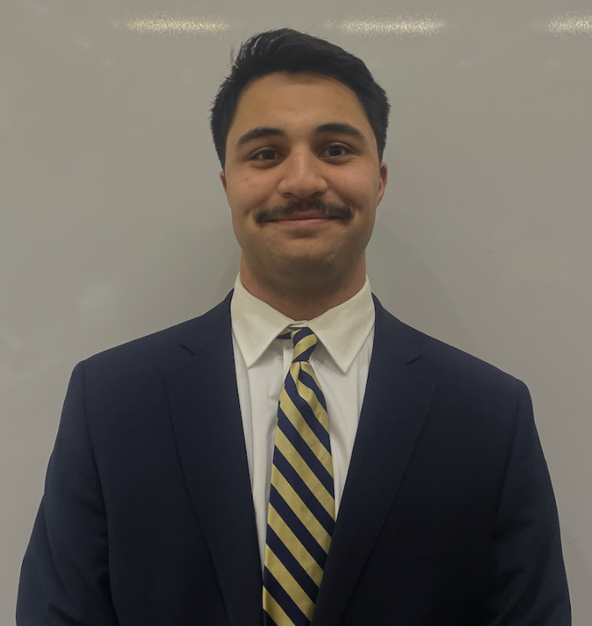
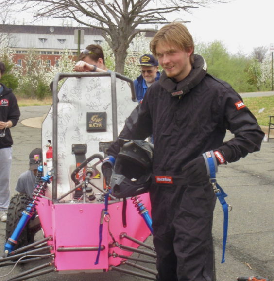

Student panelists
Referencing the content in this webpage:
Bulusu, Kartik V. (2026, October 09). Introduction to Mechanical and Aerospace Engineering [Course lecture notes, codes and presentations]. Department of Mechanical and Aerospace Engineering, The George Washington University.
Zain Mohsin
|
Hi, my name is Zain Mohsin and I am a Senior in Mechanical Engineering from Michigan. I love being creative, being active, and working on designs for the GW Design/Build/Fly team. Email: TBA LinkedIn |
 |
Will Carr
|
I’m Will Carr, Junior in Mechanical Engineering from Northern California and love to surf and ride motorcycles at home. Here at GW I am involved in multiple Student orgs, GW Baja where I teach new members how to design and manufacture an off road race car, and GW TRAiLS where I lead outdoor trips with everything from whitewater rafting, backpacking, day hikes, and more! I also am currently working on research with SEAS and SMHS developing the PCAD medical device project. Email: TBA LinkedIn |
 |
Maggie Lee
|
My name is Maggie Lee and I am a senior studying mechanical engineering with a concentration in aerospace! I recently interned with Wing Aviation as a field and product engineer and have also worked with MDOT. I am involved on the GW Rocket Team, SEASSPAN, SWE, and GW Balance. Email: TBA LinkedIn |
Grace Welsh
|
Hi! I am Grace Welsh. I am a 4+1 Masters Student studying MAE. I have worked in composite material testing, design and manufacturing, and prototyping. I am also a TA for mechanical design of machine elements. I was a Presidential Scholar at GWU durung my undergraduate studies. I was also a part of the rocket team (aerostructures), SEASSPAN and A.O.E. (Alpha Omega Epsilon). Email: gracewelsh27@gwmail.gwu.edu LinkedIn |